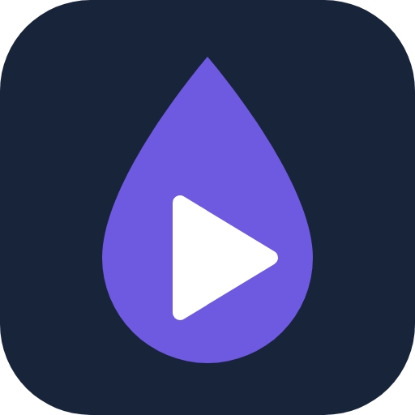

Güvenli alan, ızgara ve seçim çerçevesi çıktıya eklenmez. Her işlemde en fazla 24 görsel oluşturulur.
Şablonunu seç, haberini yaz. Fotoğraf kadrajı için C, katmanları seçip taşımak için V kullan. Her çalışma ayrı fotoğraf, şablon ve katmanlarıyla saklanır.
Marka sekmesinde yayıncı profilleri, Şablon bölümünde kendi koleksiyonunu oluştur. Projelerden CSV listesiyle toplu çalış; Yayın panelinde açıklama ve tarih ekle. Üstteki takvim, akış ve video düğmeleriyle paylaşım hazırlığını tamamla.
Projeler bu bilgisayarda saklanır. .inkreel proje dosyası; fotoğrafları, logoyu ve katmanları içerir. Projeyi başka bir bilgisayarda açmak için bu dosyayı taşıyabilirsin.
Kaydedilen şablon yeni bir çalışma oluşturur. Mevcut çalışman korunur.
Sütunlar: başlık, üst_bilgi, kategori, kaynak, fotoğraf, açıklama, yayın_tarihi. Fotoğraf sütununa seçtiğin yerel dosyanın adını yaz.
Bir CSV dosyası seç. Önce haber listesini burada kontrol edebilirsin.
Tarihler bu bilgisayarın yerel saatine göredir. Takvim dışa aktarımı, otomatik sosyal medya yayını başlatmaz.
Projedeki son 9 çalışma. Kapaklar bu önizlemede aynı orana kırpılır.
Kes, kadrajını seç, sesini ayarla. Hepsi cihazında.
Yayıncının verdiği adresi bir kez kaydet. İndirilen güncellemeler uygulamadaki imza anahtarıyla doğrulanır.
Kurulumdan önce açık proje otomatik yedeklenir. Taslaklar ve projeler program dosyalarından ayrı tutulur.
Birazdan hazır.